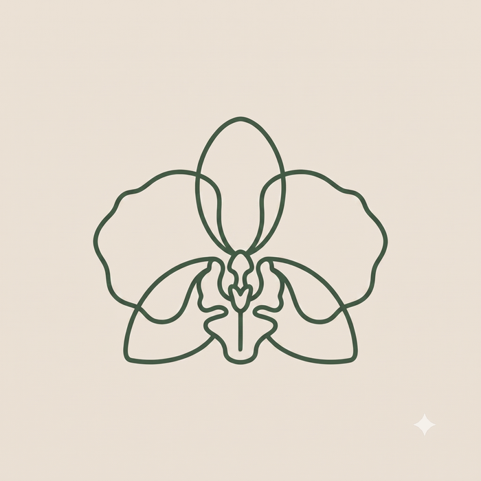

Por qué este proyecto
Maceteros para Orquídeas necesita un sistema de marca consistente antes de la próxima feria: algo que se vea igual de bien en un sticker, en el empaque, y en cualquier pieza que hagamos de acá en adelante. No es solo un logo nuevo, es la base que va a sostener todo lo que venga después.
El punto de partida es lo que ya existe: el macetero impreso en 3D, con paredes de malla que dejan respirar la raíz de la orquídea, y el sello que ya identifica cada pieza como original. La marca que estamos armando parte de ahí, no de cero.
Personalidad
Un producto pensado con cuidado real, no solo bonito. La base es técnica y precisa, así es como se diseñó el macetero, y el color entra solo donde importa: en la flor. Esa combinación es la que mejor representa lo que hace especial a este producto, apoya el crecimiento natural de la orquídea con una solución bien pensada, no genérica.
Paleta de color
Los tres primeros colores vienen del producto real, el tono del filamento y el verde de la hoja. El magenta es el color exacto de la flor, y es el único que se usa como acento, nunca como base.
Tipografía
Dos familias, roles distintos: presencia y lectura.
Primera oleada
Dos caminos distintos, ambos parten de la proporción real de una orquídea, ninguno es un dibujo genérico de flor. En cada camino, la Opción A es siempre la versión más simple, nuestra recomendación de mínimo; la Opción B agrega un poco más de detalle para comparar.
Un solo trazo fino, sin relleno. Se ve premium y funciona bien grabado o impreso en detalle.


Color plano, formas anchas y redondeadas. Se lee mejor de lejos o muy chico, como en un sticker.


Cómo seguimos desde acá
- Ustedes eligen dirección. Puede ser una completa, o partes de distintas, por ejemplo el trazo de una con el color de otra.
- Se refina a mano. La versión elegida se redibuja con precisión (simetría exacta, grosor de línea parejo) y se prueba a los tamaños reales de uso: sticker, empaque, redes.
- Se arma el kit de marca completo. Logo en todas sus variantes (color, blanco y negro, vertical, horizontal), y las piezas para la feria: stickers y empaque.
Lo que necesitamos de ustedes
Antes de seguir puliendo, nos sirve mucho saber qué piensan de esta primera oleada.
- ¿Cuál de los dos caminos representa mejor lo que quieren para la marca, el técnico o el amistoso?
- Dentro de ese camino, ¿alguna versión puntual les gusta más que otra?
- ¿Hay algo que definitivamente no quieren ver en la versión final?
- Con eso, ¿nos dan el visto bueno para avanzar a la versión refinada?